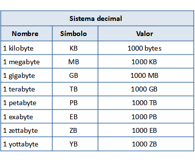
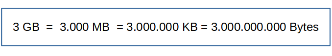

El disco duro del ordenador, la memoria del móvil, las unidades USB, las tarjetas SD..., son unidades de almacenamiento que, para alojar datos en su interior, deben estar preparados para ello y tener una infraestructura. Quien se encarga de administrar la memoria de cada unidad es el sistema de archivos, que forma parte del sistema operativo. Su función es la de administrar la memoria de cada unidad, de asignarles a los archivos el espacio que necesiten, ordenarlos, permitir el acceso a ellos y administrar el espacio libre de las unidades de almacenamiento.
Principales sistemas de archivos
- FAT32: destaca su gran compatibilidad con dispositivos y sistemas operativos. Solo permite guardar archivos de como máximo 4 GB, se ha quedado anticuado.
- exFAT: es una mejora del anterior, para superar la limitación de los 4 GB.
- NTFS: es el que usa Windows por defecto. No es del todo compatible con MacOs ya que no puede escribir en las unidades formateadas con este sistema, aunque sí leerlas.
- HFS+: es el formato usado en los discos duros de Mac. Los sistemas GNU/Linux pueden trabajar con él sin problemas, en Windows sólo se puede leer el contenido de los discos formateados con este sistema, pero no escribir en ellos.
- APFS: sucesor del HFS+. Está especialmente diseñado para memorias de estado sólido (SSD), y es el que utiliza ahora en todos los iPhone, iPads de 64 bits, así como los Mac con memoria SSD y macOS High Sierra, y dispositivos tvOS, watchOS y audioOS.
- Ext2, ext3 y ext4: son los utilizados por los sistemas GNU/Linux, no son compatibles con otros.
Por lo general, si vamos a utilizar Windows utilizaremos el sistema de archivos NTFS, mientras que en los Mac usaremos APFS. Normalmente no tendremos que tener en cuenta nada más, a no ser que necesitemos usar unidades de almacenamiento en sistemas diferentes. Por ejemplo, si en casa tenemos Windows y en el trabajo solo hay Mac, si queremos llevar archivos con los que hemos trabajado en casa en un disco duro externo, tendremos que usar un sistema de archivos que sea compatible.
Unidades de medida de almacenamiento de la información
La cantidad de datos que se maneja hoy en día es enorme. Actualmente, tanto empresas como particulares generan una ingente cantidad de datos, de una forma tan exagerada que, para referirnos a la cantidad de datos mundial hemos de emplear unidades, notoriamente más grandes que las que utilizamos habitualmente, como zetta y yottabyte.
Conocer las diferentes unidades de almacenamiento y la relación entre ellas nos va a permitir valorar las capacidades de almacenamiento de las unidades de que disponemos, poderlas comparar y saber cuánta información podemos guardar en ellas. Por ejemplo, los pendrives suelen medirse en Gigabytes, mientras que los discos duros, suelen medirse ya en Terabytes.
La unidad de información mas pequeña es el bit, que puede tomar el valor de 0 ó 1. Un bit se corresponde con una señal electrónica que se representa con un "1" cuando está encendida y con un "0" cuando está apagada. Internamente, lo único que el ordenador maneja son ceros y unos.
Una secuencia de 8 bits constituye un byte, equivale a una letra, un número o símbolo. Como cada bit, dentro de un byte, puede tener el valor de "0" o "1", con un byte podemos representar hasta 28 = 256 caracteres distintos.
Para conjuntos de datos mayores a los bytes se utilizan prefijos que se colocan delante de “byte”: kilobyte, megabyte, gigabyte, etc. Hay dos tipos de prefijos: los binarios y los decimales (los que normalmente usamos).
Los prefijos binarios definen cantidades de datos en potencias de dos, mientras que los decimales utilizan potencias de 10. Obviamente, los prefijos binarios expresan con más precisión las cantidades de almacenamiento, sin embargo, por sencillez, se ha impuesto el uso de los prefijos decimales. Según el sistema decimal, 1 kilobyte son supuestamente 103= 1000 bytes. Sin embargo, en realidad son 210 = 1024 bytes.
Algunas de las unidades de medida del sistema binario son: kibibyte (210 bytes = 1024 bytes), mebibyte (210 kibibytes = 1024 kibibytes), gibibyte,...
Para ir convirtiendo de una unidad a otra inmediatamente mayor hay que multiplicar por 1.024, pero se suele aproximar a 1.000 porque así es más fácil realizar la conversión. Así, tenemos las siguientes unidades de almacenamiento, utilizando base 10 (decimal) en vez de binaria:


Los ordenadores convierten automáticamente los números decimales en binarios y viceversa, de forma invisible para el usuario. Para que el usuario pueda interactuar con la máquina, se han creado códigos que representan cada carácter como una cadena única de bits. El código más común es el ASCII (American Standard Code for Information Interchange, Código estándar estadounidense para el intercambio de información).
Unicode es otro estándar que se utiliza para la codificación de caracteres de manera universal.
No debemos confundir las unidades de almacenamiento con las unidades para medir la velocidad de transferencia de datos. En este último caso, utilizamos una medida basada en los bits transmitidos por segundo, así, hablamos de megabits por segundo (Mbps) y gigabits por segundo (Gbps) para referirnos a velocidades de conexión.
Tipos de unidades de almacenamiento
Almacenamiento principal: son memorias rápidas que almacenan la información con la que trabaja la CPU.
- RAM: memoria volátil que contiene de forma temporal las instrucciones y los datos que maneja el procesador. Su contenido se borra cuando el ordenador se apaga. Los PC de hoy en día suelen tener entre 8 y 16 GB de RAM.
- Caché: es una memoria muy rápida que almacena temporalmente información leída de la RAM, para que la próxima vez que se necesite dicha información se acceda a ella más rápido.
Almacenamiento secundario: son memorias que no se borran cuando se apaga el ordenador, es decir, almacenan la información de forma permanente. Son más lentas que las de almacenamiento principal, pero, en cambio, poseen más capacidad de almacenamiento. Suelen albergar el sistema operativo y las aplicaciones y datos que usamos habitualmente.
- Discos duros magnéticos (HDD): almacenan los programas y los datos. Cuando un usuario quiere utilizar un programa, la información se lee del disco duro y se pasa a la RAM (más rápida) para que el procesador pueda trabajar con ella. Los HDD son discos magnéticos que se componen de una cabeza lectora, posicionada sobre una aguja, y una serie de discos denominados platos, que giran constantemente. Los datos se encuentran sobre la superficie del disco, y la aguja se va moviendo de un lado a otro para leer los datos. Este tipo de discos son con los que normalmente vienen equipados los ordenadores personales, aunque ya se empiezan a sustituir por los SSD, ya que estos últimos ofrecen mejores prestaciones.
- Discos de estados sólidos (SSD): son más modernos que los anteriores, se basan en tecnología Flash. Son más caros que los HDD, pero ofrecen más ventajas (más rápidos, menos ruido, menos tamaño,...). Las unidades SSD se pueden encontrar, aparte de los nuevos PC y los portátiles de gama alta, en smartphones, tablets y, a veces, cámaras de vídeo.
- Memorias ROM: memorias de solo lectura. Almacenan el firmware, programas que controlan un dispositivo. Ejemplo de ROM es la BIOS.
Almacenamiento externo
- Memorias USB: también llamados pendrive o USB flash Drive, son dispositivos portátiles basados en tecnología Flash y se conectan al ordenador por USB. Antes de que se extendiera el uso de la compartición de archivos en la nube, las memorias USB eran esenciales para trasladar fácilmente los archivos de un dispositivo a otro.
- Tarjetas SD: también son de tipo Flash. Se suelen usar como medio de almacenamiento en las cámaras digitales.
- Dispositivos de almacenamiento óptico: poseen una lámina de material metálico que refleja un haz de luz láser o no lo refleja dependiendo de las marcas que se graban en un surco en forma de espiral a lo largo del disco. El CD-ROM, el DVD y el Blu-Ray son unidades ópticas de almacenamiento. Estos medios han caído en desuso en los últimos años. En un CD, pueden almacenarse hasta 700 MB de datos; en un DVD-DL, hasta 8,5 GB y, en un Blu-Ray, entre 25 y 128 GB.
- Discos duros externos HDD y SSD: los HDD suelen ofrecer hasta 22 TB y los SSD, hasta 8 TB.
- Disquetes: fueron los primeros dispositivos de almacenamiento extraíbles y portátiles. Ya están obsoletos. También llamados floppy disk, su capacidad rondaba entre los 720 KB y 1,44 MB, cantidades que hoy en día nos parecen irrisorias.
Almacenamiento en red
El acceso a los datos se realiza a través de una red local Ethernet o a través de internet, dando la impresión de que se está trabajando con una unidad de almacenamiento local. Este tipo de almacenamiento permite que los recursos de almacenamiento se puedan optimizar y compartir entre varios ordenadores.
- Almacenamiento en la nube: Esta "nube" es un numeroso grupo de servidores alojados en centros de datos de todo el mundo. Cuando guardamos un documento en la nube, lo almacenamos en esos servidores, lo que nos permite ahorrar espacio en nuestro ordenador.
- Servidores NAS: son ordenadores dedicados a almacenar datos en sus discos, permitiendo recuperar, guardar y compartir los datos en un punto centralizado para todos los ordenadores de la red local.
- SAN: es una red de almacenamiento de alta velocidad que proporciona acceso al almacenamiento en bloque.
Almacenamiento en la nube con Google Drive
Drive es un servicio de almacenamiento en la nube que nos permite gestionar y compartir contenido fácilmente. Podremos acceder a la información que almacenemos en la nube de forma rápida y desde cualquier lugar.
Características de Drive
- Barra de búsqueda: nos permite buscar archivos o carpetas en nuestro Drive, ofrece distintos parámetros para configurar y filtrar la búsqueda (por tipo de archivo, ubicación, última modificación...).
- Mi unidad: aquí podemos crear nuevos archivos o carpetas, ya sea subiéndolos desde el pc o creándolos en la nube con cualquiera de las aplicaciones que ofrece Google. Una cuestión importante es tener todos los archivos y carpetas bien organizados, para que luego sea más fácil gestionarlos.
- Reciente: aquí se muestran los últimos elementos a los que hemos accedido.
- Destacados: cuando queramos acceder a determinados archivos o carpetas de manera más rápida los marcaremos como destacados. Para ello, basta con hacer clic con el botón derecho sobre el elemento y luego en Añadir a Destacados.

- Compartidos conmigo: son los archivos que han sido compartidos con nosotros.
- Subir un archivo o carpeta a Drive: pulsamos en Mi unidad y hacemos clic en
 y luego Subir archivo; o pulsamos con el botón derecho en la parte vacía de la ventana y seleccionamos Subir archivo. Actuaremos de forma similar para subir una carpeta, en este caso, se subirá la carpeta con todo su contenido.
y luego Subir archivo; o pulsamos con el botón derecho en la parte vacía de la ventana y seleccionamos Subir archivo. Actuaremos de forma similar para subir una carpeta, en este caso, se subirá la carpeta con todo su contenido. - Compartir un archivo o carpeta: hacemos clic con el botón derecho sobre el elemento y luego Compartir. En el cuadro de diálogo escribiremos la dirección de correo de la persona con la que queremos compartir el elemento y elegiremos un rol para la misma (editor, comentador, lector). También podemos escribir un pequeño mensaje. Luego pulsamos Enviar. A esa persona con la que compartimos le llegará un correo con un enlace al recurso compartido.


Para compartir, también podemos usar el icono correspondiente de la barra de herramientas situada en la parte superior. Al compartir un archivo o carpeta, la persona con la que compartimos recibirá un correo con un enlace al elemento compartido.